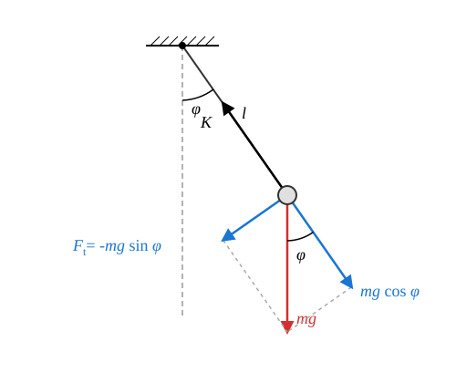

A matematikai inga
A matematikai inga fogalma
Matematikai inga: Pontszerű test, mely rögzített hosszúságú, nyújthatatlan, elhanyagolható tömegű fonalon a nehézségi erő hatása alatt végezhet lengéseket. A fonal másik vége a Földhöz rögzített rendszerben rögzítve van. A lengések során a fonal feszes marad.
Kísérlet
A kísérlet szépen mutatja, hogy kis nyílásszögek esetére a kúpinga periódusideje közelítőleg megegyezik a matematikai inga periódusidejével. A kúpinga egyenletes körmozgása szinkronban történik az inga lengéseivel, feltéve, hogy a kúp nyílásszöge megegyezik az inga lengésének szögével és ezeket egyszerre indítják. Ezek szerint az inga jó közelítéssel harmonikus rezgőmozgást végez kis kitérések esetén.
A periódusidőre is azt a képletet kaptuk, amelyet az inga lengéseire fogunk levezetni. Az egyezés azonban csak a kis kúpszögek határesetére igaz!
Ha a keringés sugara és a fonal hossza, akkor érvényes, hogy:
Amennyiben ,
tehát a következő képletet kapjuk a kis kitérésű inga lengésidejére:
A mozgásegyenlet

A testre csak a nehézségi erő és a kötélerő hat. A kötélerő a kötél irányába mutat, míg a nehézségi erő függőlegesen lefelé. Bontsuk fel a nehézségi erőt kötél irányú és rá merőleges, tehát érintő irányú komponenseire! Az inga körmozgást végez, de ez nem egyenletes körmozgás. A kötél irányú komponensekre a következő összefüggés érvényes:
Ez az egyenlet alkalmas a kötélben ébredő erő meghatározására. Erre most mi nem vagyunk kíváncsiak. A számunkra érdekes egyenlet az érintő irányú komponensekre vonatkozik. Legyen a komponensek pozitív iránya a kitérési szög növekedése által meghatározott irány! Ekkor az érintő irányú erő a következő:
Az erő negatív, hiszen a kitérést csökkenteni igyekszik, amennyiben pozitív. Newton második törvénye szerint:
Tehát
Vagyis
Az érintő irányú gyorsulás előjeles értéke a szöggyorsulásból kapható meg a következőképpen:
Ez igaz, hiszen a körmozgás sugara esetünkben , a fonal hossza.
Tehát a mozgásegyenlet végleges alakja a következő:
A szögre hasonló egyenletet kaptunk, mint a harmonikus rezgőmozgással analóg mozgásegyenlet. A gyorsulás helyett itt a szöggyorsulás szerepel, de az egyenlet jobb oldalán a szög helyett annak szinusza szerepel. Mi a szög megjelenését várnánk, hisz akkor lehetne az egyenletet koszinusz függvénnyel megoldani az ismeretlen szög időbeli változására, tehát a mozgás ekkor lenne harmonikus rezgőmozgás a szögre! Ez az egyenlet bár megoldható, a megoldása csak felsőbb matematikával lehetséges és ott is nehéz, mivel speciális függvények alkalmazására vezet. Mi más utat választunk.
Kis szögek határesete

Legyen most a szög igen kicsiny a lengés teljes tartama alatt! Ekkor a szinusz függvény a következő lesz:
Itt a közelítésünk lényege, hogy az ívhosszat a hozzá tartozó hosszúságú húrral pótoltuk, amely egyenes szakasz. Ez nyilván annál pontosabb, minél kisebb a kitérés. Ez azt jelenti, hogy ebben a speciális esetben jogosak az alábbi közelítések:
Tehát az inga mozgásegyenlete kis kitérések esetén a következő alakot ölti:
Vezessük be a következő jelölést!
Ekkor az egyenlet megoldása periodikus rezgés a szögre. Ha az ingát a szélső helyzetéből sebesség nélkül engedjük el, akkor ez a függvény a következő:
Ezt az egyenletet a fonal hosszával megszorozva kapjuk, hogy:
Közelítésünk alapján az ívhossz a függőleges szimmetriatengelytől mért távolsággal pótolható, így:
Ez persze csak akkor igaz, ha az inga maximális kitérési szöge is igen kicsiny radiánban.
A periódusidő
Vegyük mindkét oldal reciprokát!
Végül mindkét oldalból gyököt vonva kapjuk a következő képletet:
Látjuk, hogy a periódusidő nem függ sem az amplitúdótól, sem pedig a lengő test tömegétől. Az amplitúdótól való függetlenség azonban csak a kis kitérések határesetére igaz.
Példa
Számítsuk ki az hosszú inga periódusidejét! Ezt szokták másodpercingának is nevezni. Mi ennek az oka?
Ennek az ingának a fél periódusa (tehát amíg egyik szélső helyzetből a vele szemben lévő szélső helyzetbe lendül) kb. 1 másodperc. A hiba csak kb. 3 ezrelék, de és így a hiba is függ kissé a földrajzi helytől.
Szimuláció
A szimulációban a test az alsó, egyensúlyi helyzetből indul egy lökéssel. Az inga hossza , a nehézségi gyorsulás . * Mérjük meg az első 10 lengés időtartamát! Mivel az inga nem a szélső helyzetből indul, de nekünk a szélső helyzetben célszerű megállítani a szimulátort, a periódusidő kiszámításához az időt, amit a szimulátor mutat 10,25-tel kell elosszuk, hisz 10 és egy negyed lengést mérünk. * Számítsuk is ki a lengésidőt az adatokból. Mekkora hibára számíthatunk? Melyik a legfontosabb hibaforrás és mekkora a tényleges hiba?
Feladatok
Egy diák egy olyan matematikai ingát szeretne készíteni az iskolai laboratóriumban, amelynek periódusideje pontosan . Milyen hosszú fonalat kell ehhez használnia, ha a nehézségi gyorsulást -nek tekintjük?
Egy űrhajós egy idegen bolygón landol, és egy hosszú matematikai ingával kísérletezik. Azt méri, hogy az inga teljes lengést pontosan alatt tesz meg. Mekkora a nehézségi gyorsulás ezen az ismeretlen bolygón?
Két matematikai inga lengésidejét hasonlítjuk össze. Az egyik inga fonala pontosan kilencszer olyan hosszú, mint a másik ingáé. Milyen arányban áll egymással a két inga periódusideje? Válaszodat indokold a tanult képlet alapján!